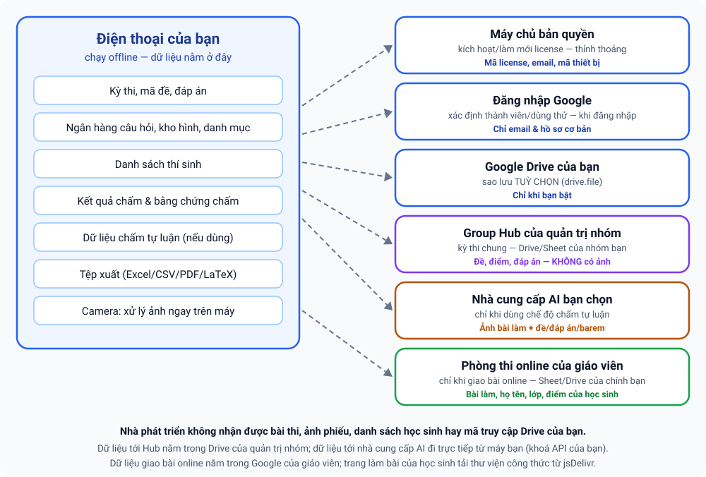

Chính sách quyền riêng tư
ExamMark — ứng dụng chấm thi bằng camera (trắc nghiệm), chấm tự luận bằng AI và giao bài online (tuỳ chọn) cho Android.
Có hiệu lực từ 11/10/2026 · Áp dụng cho ExamMark phiên bản 1.x
- Bài thi, ảnh phiếu, danh sách học sinh và điểm số nằm trên điện thoại của bạn. Nhà phát triển không nhận được chúng.
- Chỉ thông tin bản quyền (mã license, email, mã thiết bị) được gửi tới máy chủ bản quyền để kích hoạt và giới hạn số thiết bị.
- Ba tính năng tuỳ chọn có thể đưa dữ liệu ra khỏi máy khi chính bạn dùng, không qua nhà phát triển: Kỳ thi nhóm (dữ liệu nằm trong Drive/Sheet của quản trị nhóm, không có ảnh bài làm), Chấm tự luận bằng AI (ảnh và nội dung bài được gửi thẳng từ máy bạn tới nhà cung cấp AI bạn chọn, bằng khoá API của bạn) và Giao bài & chấm thi online (Phòng thi) (học sinh làm bài trên trình duyệt; bài làm, họ tên, lớp và điểm nằm trong Google Sheet/Drive của chính giáo viên).
- Đăng nhập Google và sao lưu Drive là tuỳ chọn; chỉ truy cập tệp do ExamMark tạo trong Drive của bạn.
- Không quảng cáo, không bán dữ liệu, không công cụ theo dõi hành vi của bên thứ ba.
- Bạn có thể xoá dữ liệu bất kỳ lúc nào và yêu cầu xoá thông tin bản quyền qua email.
1. Ai chịu trách nhiệm?
ExamMark do Phan Thế Chiến (“nhà phát triển”, “chúng tôi”) phát hành. Liên hệ về quyền riêng tư: phanchienmdc@gmail.com
(Điện thoại/Zalo: 0989081315).
2. Dữ liệu nào được xử lý và lưu ở đâu?

| Dữ liệu | Mục đích | Lưu ở đâu | Có gửi cho nhà phát triển? |
|---|---|---|---|
| Kỳ thi, mẫu phiếu, mã đề, đáp án, điểm từng câu | Soạn đề và chấm bài | Trên điện thoại của bạn | Không |
| Danh sách thí sinh (họ tên, lớp, số báo danh… do bạn nhập), bài làm, kết quả, điểm | Chấm bài, xuất bảng điểm | Trên điện thoại của bạn | Không |
| Ngân hàng câu hỏi, kho hình, danh mục môn/chủ đề | Soạn đề, trộn đề | Trên điện thoại của bạn | Không |
| Dữ liệu chấm tự luận: kỳ thi, đề/đáp án/barem, ảnh bài làm, bản chép, điểm, lịch sử sửa điểm; khoá API của nhà cung cấp AI | Chấm tự luận | Trên điện thoại của bạn (khoá API chỉ lưu trên máy, không có trong tệp sao lưu) | Không |
| Ảnh phiếu bạn chụp | Nhận dạng ô tô và chấm điểm | Xử lý ngay trên điện thoại; chỉ lưu lại trên máy khi bạn chọn lưu (ví dụ “Lưu ảnh” làm bằng chứng chấm) | Không tải ảnh lên máy chủ của nhà phát triển |
| Tệp xuất (Excel/CSV/PDF) | Bạn dùng, chia sẻ, in | Thư mục trên điện thoại (thường Tài liệu/ExamMark) | Không |
| Kỳ thi nhóm: nội dung kỳ thi đẩy lên (đề, mã đề, đáp án, danh sách thí sinh), kết quả giáo viên gửi (điểm, đáp án cuối, cờ “xem lại”, số báo danh, mã đề), email giáo viên, nhật ký duyệt/sửa/đính chính, biên bản. Không gồm ảnh bài làm. | Chấm chung nhiều giáo viên, duyệt, chốt | Group Hub: bảng tính Google (Drive/Sheet) do quản trị nhóm sở hữu | Không — nhà phát triển không truy cập Hub của bạn |
| Chấm tự luận: ảnh bài làm, bản chép, đề/đáp án/barem gửi khi bạn bấm chấm | AI chép và chấm bài | Nhà cung cấp AI bạn chọn (Gemini, OpenAI hoặc Claude), theo chính sách của họ | Không — gửi thẳng từ máy bạn tới nhà cung cấp AI |
| Giao bài online (Phòng thi): đề, đáp án, lời giải, hình; danh sách thí sinh (mã HS, họ tên, lớp, email, PIN) do giáo viên nhập; bài làm của học sinh (mã HS/SBD hoặc họ tên + lớp, email nếu nhập, đáp án, thời điểm, số lần và thời điểm rời màn hình), điểm, nhận xét, trạng thái gửi email; ảnh công thức dùng cho email (nếu bật) | Giao bài, chấm tự động, thống kê, gửi kết quả | Google Sheet và Drive của giáo viên (Phòng thi do giáo viên tự triển khai; PIN lưu dạng rõ trong Sheet) | Không — dữ liệu đi từ trình duyệt của học sinh tới Phòng thi của giáo viên, không qua nhà phát triển |
| Gói chia sẻ để rà soát (tệp do bạn tạo; mặc định không kèm ảnh bài làm) | Nhờ đồng nghiệp kiểm tra điểm | Tệp trên máy và nơi bạn tự chọn gửi tới | Không |
| Mã license, loại gói, hạn dùng, hạn mức (số thiết bị, số kỳ thi, số lượt quét/tháng) | Kích hoạt và áp dụng gói dịch vụ | Máy chủ bản quyền | Có |
| Email: chủ license, email dùng thử, email thành viên tổ chức, tên tổ chức | Xác định quyền dùng license | Máy chủ bản quyền | Có |
| Thiết bị: mã định danh do hệ điều hành cấp cho ứng dụng (không phải IMEI hay số điện thoại), nhãn thiết bị (loại máy/hệ điều hành, tối đa 60 ký tự), phiên bản app, thời điểm kích hoạt và lần dùng gần nhất | Giới hạn số thiết bị theo gói, hỗ trợ kỹ thuật | Máy chủ bản quyền | Có |
| Bộ đếm sử dụng (số lượt quét theo tháng) | Áp hạn mức của gói | Máy chủ bản quyền | Có (chỉ con số) |
| Nhật ký thao tác bản quyền: thời điểm, email thực hiện, loại thao tác (tạo dùng thử, kích hoạt/gỡ thiết bị, cập nhật thành viên…), mã license | Vận hành, chống lạm dụng, giải quyết tranh chấp | Máy chủ bản quyền | Có |
| Nội dung yêu cầu hỗ trợ bạn tự nhập trong app hoặc gửi email | Trả lời bạn | Hộp thư/ máy chủ bản quyền | Có, chỉ khi bạn gửi |
| Nhật ký kỹ thuật (lỗi) | Chẩn đoán lỗi | Trên điện thoại của bạn | Chỉ khi bạn tự sao chép và gửi |
| Bản sao lưu | Phục hồi dữ liệu | Google Drive của chính bạn (nếu bạn bật) | Không |
Phiên bản hiện tại của ExamMark không có máy chủ của nhà phát triển lưu dữ liệu kỳ thi hay dữ liệu học sinh. Dữ liệu chỉ rời khỏi điện thoại khi chính bạn dùng một chức năng tuỳ chọn ở trên (sao lưu Drive, kỳ thi nhóm, chấm tự luận, giao bài online, hoặc tự chia sẻ tệp xuất/gói rà soát) và khi đó đi tới nơi do bạn (hoặc quản trị nhóm của bạn) chọn.
3. Máy chủ bản quyền
Việc kích hoạt và làm mới license được thực hiện qua dịch vụ do nhà phát triển vận hành trên nền tảng Google Apps Script / Google Sheets (tài khoản Google của nhà phát triển). Dữ liệu truyền qua HTTPS. Kết quả kích hoạt là một mã xác nhận được ký số mà ứng dụng kiểm tra trên máy, nhờ vậy sau khi kích hoạt app vẫn dùng được offline trong thời hạn cho phép. Chỉ nhà phát triển có quyền truy cập bảng dữ liệu này.
4. Đăng nhập Google và Google Drive
Nếu bạn chọn đăng nhập bằng Google hoặc sao lưu lên Drive, ExamMark yêu cầu các quyền sau:
| Quyền (scope) | Dùng để |
|---|---|
openid, email, hồ sơ cơ bản | Xác định bạn là thành viên của tổ chức/license (so khớp email). |
https://www.googleapis.com/auth/drive.file | Tạo và đọc chỉ các tệp do chính ExamMark tạo trong Drive của bạn để sao lưu/khôi phục. ExamMark không truy cập các tệp khác của bạn. |
- Mã truy cập Google Drive được giữ trên thiết bị của bạn; máy chủ bản quyền không lưu mã này và nhà phát triển không có quyền đọc Drive của bạn.
- Bạn có thể thu hồi quyền bất cứ lúc nào tại myaccount.google.com/permissions.
Việc ExamMark sử dụng và chuyển giao thông tin nhận được từ các API của Google tuân thủ Chính sách Dữ liệu Người dùng của Google API Services, bao gồm các yêu cầu Sử dụng Hạn chế (Limited Use). Dữ liệu từ Google chỉ được dùng để cung cấp tính năng bạn yêu cầu, không dùng cho quảng cáo, không bán và không chuyển cho bên thứ ba.
ExamMark’s use and transfer to any other app of information received from Google APIs will adhere to the Google API Services User Data Policy, including the Limited Use requirements.
5. Kỳ thi nhóm và Group Hub (tuỳ chọn, license tổ chức)
- Group Hub là một bảng tính Google do quản trị nhóm tạo từ bản mẫu và triển khai trong tài khoản Google của chính họ. Kỳ thi và kết quả được lưu trong Drive/Sheet của quản trị nhóm; nhà phát triển không truy cập dữ liệu này.
- Khi bạn dùng tab Nhóm, ứng dụng gửi yêu cầu tới địa chỉ Hub của nhóm kèm thông tin xác nhận license để Hub kiểm tra bạn có thuộc nhóm được phép hay không.
- Gửi lên Hub: nội dung kỳ thi (đề, mã đề, đáp án, danh sách thí sinh), kết quả chấm của giáo viên (điểm, đáp án cuối, cờ “xem lại”, số báo danh, mã đề), email giáo viên/quản trị, nhật ký duyệt – sửa – đính chính và biên bản. Ảnh bài làm không được gửi lên Hub; ảnh chấm (nếu bạn chọn lưu) ở lại máy giáo viên đã chấm.
- Ai xem được: quản trị nhóm xem toàn bộ dữ liệu của nhóm; giáo viên chỉ thấy kỳ thi của nhóm con mình (và các lớp được phân công) cùng kết quả của chính mình.
- Quản trị nhóm chịu trách nhiệm kiểm soát Drive chứa Hub (không chia sẻ thư mục cho người ngoài), và có thể dùng chức năng Dọn kỳ thi để xoá đề và bài chấm chi tiết khỏi Hub (biên bản được giữ), hoặc xoá trực tiếp trong Drive của mình.
6. Chấm tự luận bằng AI (tuỳ chọn)
- Chỉ hoạt động khi chính bạn chọn chế độ Chấm tự luận, nhập khoá API của nhà cung cấp AI và bấm chấm.
- Dữ liệu gửi đi: ảnh bài làm (để AI chép), bản chép và đề/đáp án/barem (để AI chấm), và ảnh bài làm cả ở bước chấm nếu bạn bật “Gửi kèm ảnh khi chấm”; khi nhập đề từ tệp PDF hoặc ảnh, tệp đó cũng được gửi cho AI đọc. Ảnh bài làm có thể chứa họ tên và thông tin học sinh viết trên bài.
- Gửi tới đâu: thẳng từ điện thoại của bạn, qua HTTPS, tới nhà cung cấp AI bạn chọn (Google Gemini, OpenAI hoặc Anthropic Claude), bằng khoá API của bạn. Nhà phát triển ExamMark không nhận, không lưu các dữ liệu này. Nhà cung cấp AI xử lý và lưu giữ theo điều khoản và chính sách riêng của họ (có thể khác nhau giữa gói miễn phí và trả phí, và máy chủ có thể ở nước ngoài) — hãy đọc kỹ trước khi dùng.
- Khoá API chỉ lưu trên điện thoại của bạn; không nằm trong tệp sao lưu hay gói chia sẻ và không gửi cho nhà phát triển.
- Dữ liệu tự luận lưu trên máy, không vào sao lưu Drive hay Group Hub. Bạn xoá được bằng “Xoá toàn bộ dữ liệu tự luận trên máy” hoặc gỡ ứng dụng/xoá dữ liệu ứng dụng.
- Gói chia sẻ để rà soát do bạn tạo và tự chọn kênh gửi; mặc định không kèm ảnh bài làm. Hãy chỉ gửi cho người có thẩm quyền.
- Giáo viên/nhà trường chịu trách nhiệm xác định căn cứ pháp lý và quy định nội bộ khi đưa dữ liệu học sinh tới nhà cung cấp AI bên thứ ba. Kết quả do AI tạo chỉ là đề xuất, cần được giáo viên kiểm tra và quyết định.
7. Giao bài & chấm thi online — Phòng thi (tuỳ chọn)
- Phòng thi là một ứng dụng web Google Apps Script cùng Google Sheet và Drive do chính giáo viên tạo từ bản mẫu và triển khai trong tài khoản Google của giáo viên, với địa chỉ và khoá phòng thi riêng. Nhà phát triển không truy cập dữ liệu này, và khoá/địa chỉ của bạn không được sao chép theo bản mẫu. Chức năng chỉ hoạt động khi chính bạn cài đặt, kết nối trong app và giao bài.
- Dữ liệu được lưu: bài thi (câu hỏi, đáp án, lời giải, hình); danh sách thí sinh do giáo viên nhập (mã học sinh, họ tên, lớp, email, PIN); bài làm của học sinh (mã học sinh/SBD hoặc họ tên + lớp, email nếu học sinh nhập, đáp án, thời điểm làm bài); khi bật chống rời màn hình thì có cả số lần và thời điểm rời màn hình; điểm, nhận xét và trạng thái gửi email. Tất cả nằm trong Google Sheet/Drive của giáo viên. PIN được lưu dạng rõ trong Sheet để giáo viên phát lại cho học sinh.
- Học sinh không cần tài khoản Google. Trình duyệt của học sinh gửi dữ liệu qua HTTPS thẳng tới địa chỉ Phòng thi của giáo viên; Google xử lý theo điều khoản của Google. Trang làm bài tải thư viện hiển thị công thức (KaTeX) từ mạng phân phối nội dung jsDelivr (bên thứ ba), nên trình duyệt của học sinh gửi yêu cầu kỹ thuật (gồm địa chỉ IP) tới dịch vụ đó. Đáp án và lời giải không nằm trong dữ liệu gửi cho học sinh khi đang làm bài.
- Email kết quả: do dịch vụ gửi thư của Google gửi từ tài khoản của giáo viên tới email mà giáo viên/học sinh đã nhập. Nếu bật “công thức dạng ảnh”, ảnh công thức được dựng trên máy của giáo viên và lưu trong Drive của giáo viên để nhúng vào thư.
- Nhập kết quả về kỳ thi trong app: bài làm online được chuyển từ Phòng thi về app trên máy bạn; mỗi bài nhập được tính 1 lượt vào bộ đếm lượt quét như bài quét bằng camera (mục 2: chỉ con số được gửi tới máy chủ bản quyền).
- Trách nhiệm của giáo viên/nhà trường: bạn là bên kiểm soát dữ liệu học sinh trong Phòng thi. Hãy thông báo cho học sinh/phụ huynh (nhất là việc ghi nhận rời màn hình), giữ kín khoá phòng thi, chỉ cấp quyền sửa Sheet/Drive cho người tin cậy (người sửa được Sheet xem được khoá và PIN) và bật xác minh 2 bước cho tài khoản Google đó. Bạn xoá dữ liệu trực tiếp trong Google Sheet và Drive của mình; nghi lộ khoá thì đổi khoá bằng menu của Phòng thi.
8. Quyền trên Android
| Quyền | Lý do |
|---|---|
| Máy ảnh (CAMERA) | Chụp phiếu để chấm (ảnh xử lý trên máy) và chụp bài tự luận (ảnh chỉ được gửi tới nhà cung cấp AI khi bạn bấm chấm). |
| Internet | Kích hoạt/làm mới license, đăng nhập Google, kiểm tra bản cập nhật, sao lưu Drive (tuỳ chọn), kết nối Group Hub (kỳ thi nhóm), gọi nhà cung cấp AI (chấm tự luận) và kết nối Phòng thi online của bạn (giao bài online). |
| Bộ nhớ (đọc/ghi tệp) | Lưu tệp xuất (Excel/CSV/PDF) và đọc tệp bạn chọn để nhập (đáp án, danh sách thí sinh). |
ExamMark không yêu cầu quyền danh bạ, vị trí, micro hay tin nhắn.
9. Chia sẻ dữ liệu
- Chúng tôi không bán và không cho thuê dữ liệu của bạn.
- Phiên bản hiện tại không tích hợp quảng cáo và không tích hợp công cụ phân tích/theo dõi hành vi của bên thứ ba.
- Dữ liệu chỉ đi qua các dịch vụ của Google khi bạn dùng đăng nhập/Drive, và nền tảng Google Apps Script/Sheets lưu thông tin bản quyền (mục 2–4); qua Group Hub của quản trị nhóm khi dùng kỳ thi nhóm (mục 5); tới nhà cung cấp AI do bạn chọn khi dùng chấm tự luận (mục 6); và qua Google (Apps Script/Sheet/Drive/gửi thư của chính giáo viên) cùng mạng phân phối jsDelivr khi dùng giao bài online (mục 7).
- Chúng tôi chỉ cung cấp thông tin cho cơ quan có thẩm quyền khi pháp luật yêu cầu.
10. Thời gian lưu giữ và xoá dữ liệu
- Dữ liệu trên điện thoại: được giữ đến khi bạn xoá. Gỡ ExamMark hoặc xoá dữ liệu ứng dụng sẽ xoá dữ liệu trên máy (hãy sao lưu trước nếu cần). Có thể xoá dữ liệu thử trong tab Đồng bộ.
- Bản sao lưu trên Drive: nằm trong Drive của bạn; bạn tự xoá được.
- Dữ liệu trên Group Hub: nằm trong Drive của quản trị nhóm; thời gian lưu do quản trị nhóm quyết định (có thể dọn bằng chức năng Dọn kỳ thi hoặc xoá trực tiếp trong Drive).
- Dữ liệu Phòng thi (giao bài online): nằm trong Google Sheet/Drive của giáo viên; thời gian lưu do giáo viên quyết định, giáo viên tự xoá trong Google Sheet/Drive của mình.
- Dữ liệu gửi tới nhà cung cấp AI: do nhà cung cấp đó quản lý theo chính sách của họ; nhà phát triển ExamMark không có quyền xoá thay bạn.
- Thông tin bản quyền: lưu trong thời hạn license còn hiệu lực và một thời gian hợp lý sau đó để giải quyết gia hạn/tranh chấp; xoá hoặc ẩn danh hoá khi bạn yêu cầu (trừ phần pháp luật bắt buộc giữ).
11. Quyền của bạn
Bạn có quyền biết, truy cập, chỉnh sửa, xoá, rút lại sự đồng ý và phản đối việc xử lý thông tin cá nhân của mình, phù hợp pháp luật Việt Nam về bảo vệ dữ liệu cá nhân (trong đó có Nghị định 13/2023/NĐ-CP). Để thực hiện đối với thông tin trên máy chủ bản quyền (mục 2), gửi email tới phanchienmdc@gmail.com từ địa chỉ email đã dùng khi kích hoạt kèm mã license. Chúng tôi sẽ cố gắng phản hồi trong vòng 30 ngày.
12. Dữ liệu của học sinh
- Giáo viên/nhà trường là bên quyết định nhập thông tin học sinh vào ExamMark và chịu trách nhiệm về căn cứ pháp lý, thông báo cho học sinh và phụ huynh theo quy định của đơn vị mình.
- Chỉ nhập dữ liệu cần thiết (ví dụ họ tên, lớp, số báo danh); tránh nhập thông tin nhạy cảm không liên quan.
- Ứng dụng ExamMark dành cho giáo viên và người lớn, không dành cho học sinh tự cài đặt và không hướng tới trẻ em. Riêng trang làm bài của Phòng thi (mục 7) do giáo viên giao cho học sinh qua đường dẫn: ExamMark không tạo tài khoản cho học sinh và không nhận dữ liệu của các em; giáo viên/nhà trường chịu trách nhiệm thông báo và, khi học sinh là trẻ em, xin sự đồng ý của cha mẹ hoặc người giám hộ theo quy định.
- Nếu dùng kỳ thi nhóm, chấm tự luận bằng AI hoặc giao bài online, dữ liệu học sinh sẽ tới Group Hub của nhóm, nhà cung cấp AI hoặc Google Sheet/Drive của chính bạn (mục 5–7): hãy bảo đảm quy định của trường cho phép và thông báo cho học sinh/phụ huynh khi cần.
- Vì dữ liệu học sinh ở lại trên thiết bị của giáo viên (trong chế độ chấm trắc nghiệm thông thường), hãy đặt khoá màn hình và bảo quản điện thoại cẩn thận; chia sẻ tệp xuất (Excel/CSV) chỉ với người có thẩm quyền.
13. Bảo mật
Chúng tôi áp dụng các biện pháp hợp lý: truyền dữ liệu bản quyền qua HTTPS, license được ký số, dữ liệu của app lưu trong vùng lưu trữ riêng của ứng dụng trên Android, không lưu mật khẩu Google của bạn. Không có hệ thống nào an toàn tuyệt đối; hãy giữ bí mật mã license và khoá API, và bảo vệ điện thoại của bạn. Group Hub được bảo vệ bởi tài khoản Google của quản trị nhóm — hãy bật xác minh 2 bước cho tài khoản đó. Phòng thi online được bảo vệ bởi khoá phòng thi và tài khoản Google của giáo viên: hãy giữ kín khoá và bật xác minh 2 bước tương tự.
14. Thay đổi chính sách
Khi có thay đổi quan trọng (ví dụ thêm loại dữ liệu mới), chúng tôi sẽ cập nhật trang này và ngày hiệu lực ở đầu trang, đồng thời thông báo trong ứng dụng hoặc qua kênh phát hành khi phù hợp.
15. Liên hệ
Phan Thế Chiến
Email: phanchienmdc@gmail.com
Điện thoại/Zalo: 098 908 1315
English summary
ExamMark is an Android app that grades multiple-choice answer sheets with the phone camera. Exams, question banks, student lists, sheet photos and scores stay on your device; the developer does not receive them. Only licence information (licence key, email, an OS-provided device identifier and label, app version, monthly scan count, and an operations audit log) is stored on the developer’s licensing service (Google Apps Script/Sheets) over HTTPS. Google sign-in and Google Drive backup are optional; ExamMark uses only the drive.file scope (files it created) plus basic profile/email for identifying members. Permissions: camera, internet, storage for import/export files. Three optional features can move data off the device, never through the developer: Group exams (data is stored in a Google Sheet/Drive owned by your group administrator; no answer-sheet or essay photos) AI essay grading (essay photos, transcripts and the exam/answer key/rubric are sent directly from your phone to the AI provider you choose, using your own API key, which is stored only on your device), and online exams (Exam Room) (students take the exam in a web browser without a Google account; answers, names, classes, optional emails, scores and screen-leave events are stored in a Google Sheet/Drive owned by the teacher, who also sends result emails; the exam page loads the KaTeX library from the jsDelivr CDN). No ads, no data sale, no third-party analytics. You can delete local data by uninstalling the app, delete Drive backups yourself, revoke access at myaccount.google.com/permissions, and request deletion of licensing records by emailing phanchienmdc@gmail.com. ExamMark’s use of information received from Google APIs adheres to the Google API Services User Data Policy, including the Limited Use requirements.